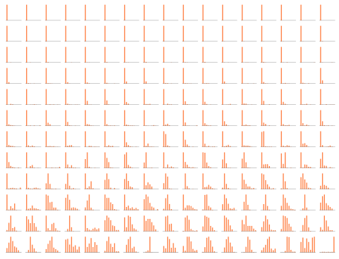
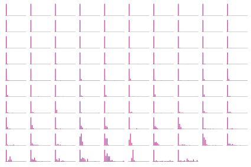
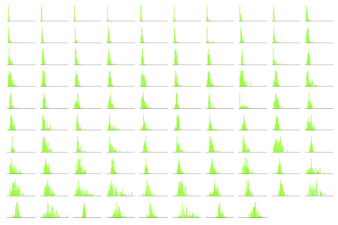
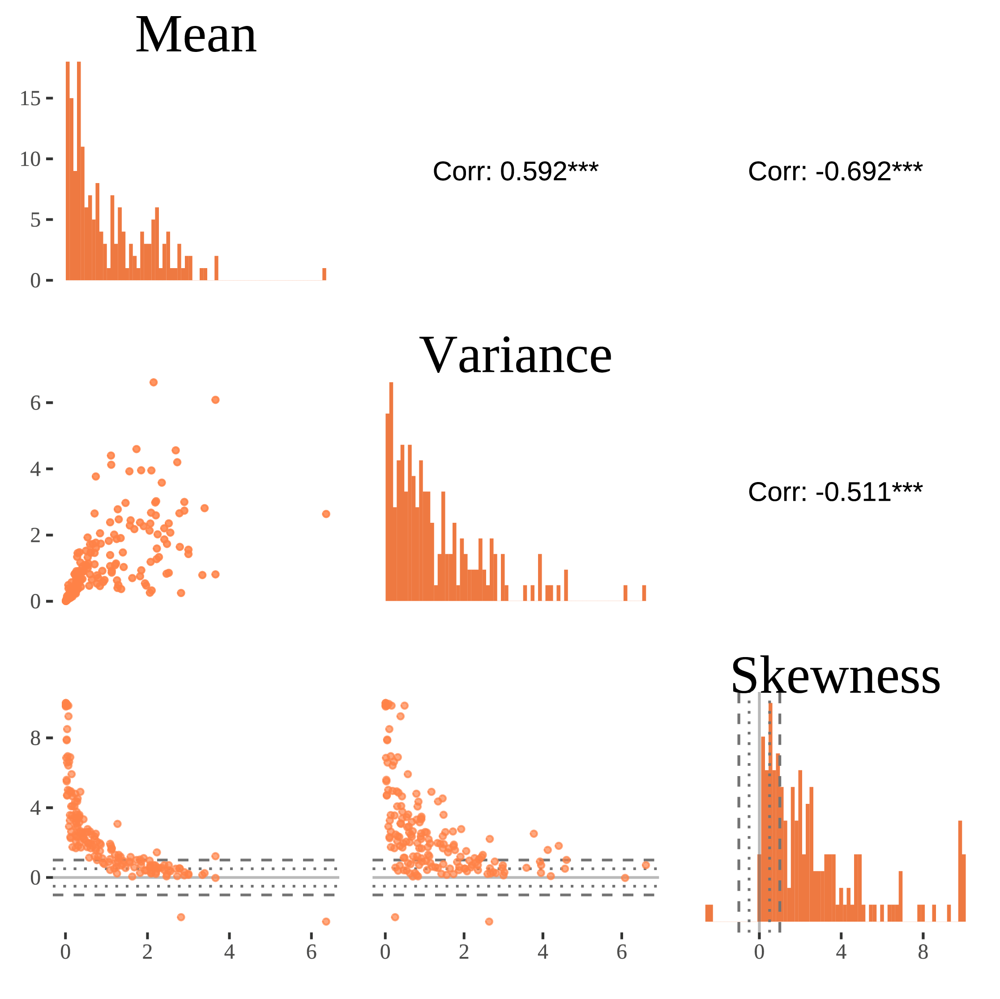
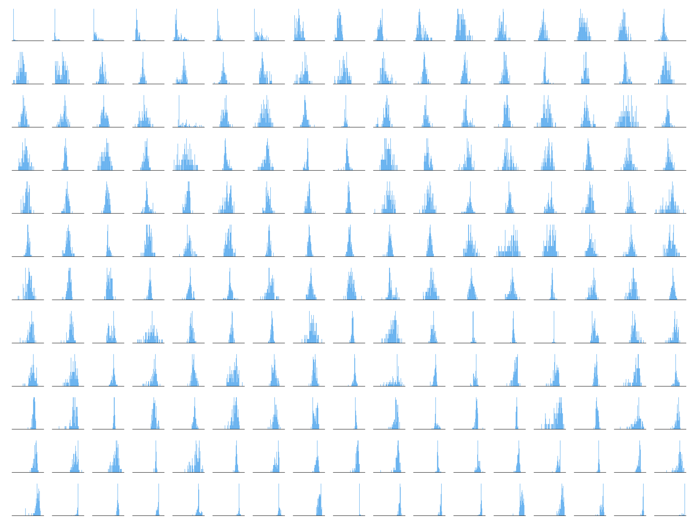
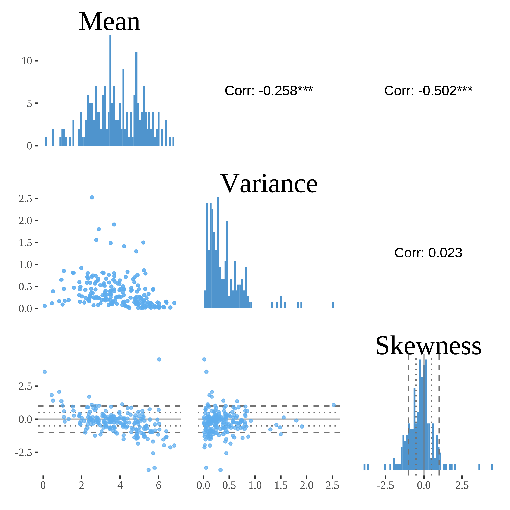

Floor and ceiling effects
Mohammadhossein Manuel Haqiqatkhah ![]()
This article builds on Haqiqatkhah et al. (n.d.)
This page is about floor and ceiling effects in empirical psychological data, which occur when a measurement instrument has a lower or upper bound that leads to the clustering of scores around the ends of the scale.
The floor effect is common in intensive longitudinal measurements of Negative Affect (NA) items, especially when the sample contains non-clinical individuals: Healthy individuals tend to experience fairly little negative emotions, and hence a lot of their scores will be equal or close to zero. Similarly, the ceiling effect may occur in Positive Affect (PA) items of the individuals with higher mental well-being.
It is important to consider these effects, because:
Understanding how and why these effects occur are an important part of understanding and controlling the measurement process (measurement theory);
Understanding how and why these effects occur are an important part of understanding the substantive process under study (substantive theory);
These effects may have consequences for analyzing and modeling the resulting intensive longitudinal data (ILD). Understanding when, how and why these effects occur allow you to find optimal ways to do the analysis/modeling.
On this page we discuss what floor and ceiling effects are (with an emphasis on the former), theories on the possible mechanisms leading to them, ways of detecting these effects in a given data set, and the implications and consequences of these effects for common models used in psychological research.
What is the floor effect?
Many of the common scales used in psychological research measure counts or unipolar constructs, and are thus lower-bounded, meaning that individuals cannot score less than a certain value on the scale: A person cannot sleep less than zero hours, smoke less than no cigarettes a day, face less than zero stressful events in a day, or feel negative distress.
Due to the lower bound on the scale, certain (groups of) individuals, especially those with lower average values of the measure, are expected to provide answers close—or equal to—the lowest value on the scale. This essentially leads to a clustering of measurements around the lower bound of the scale, thus leading to a positively skewed distribution of responses, with with relatively small variability for that construct. This phenomenon is often referred to as a floor effect, which is reflected in the individual histograms of responses.
Like many other affective items, the daily (or momentary) distress is often measured on a Likert scale from “Not at all” to “To a great extent”. An individual cannot report values below ‘not at all’, and hence the scale is bounded.
Figure 1 shows individual histograms of distress scores of individuals in the COGITO dataset (Schmiedek et al., 2010), sorted by individual mean. Individuals were measured for around 100 consecutive days. A strong floor effect is evident for more than half of the individuals.

If we measure the amount of daily alcohol consumption of individuals, we will have non-negative values, as it is impossible to consume less than zero amount of alcohol. Figure 2 shows the number of alcohol unit consumed per day (measured as a count variable) in 98 individuals participating in a daily diary study conducted by Wright et al. (2015). Almost all individuals show various degrees of the floor effect.

The floor effect may emerge if the data is collected using nearly-continuous scales (such as a 0-100 visually assisted scale [VAS]), or if the data is an aggregate or average of multiple items measured on discrete-valued (e.g., Likert) scales. Figure 3 shows the average values of 32 items measuring daily expression of personality disorders (Wright & Simms, 2016) in the dataset collected by Wright et al. (2015). Almost one-third of individuals show the floor effect to some degree.

Note that the floor effect in ILD is primarily a within-person (level-1) phenomenon (i.e., for single participants, when many of the repeated measures of that participant are at the lower bound). However, it can also occur at a between-person level (i.e., with many of the participants score low on the construct), either when individuals are measured cross-sectionally, or when person-specific (i.e., level-2) averages are calculated. As explained in Section 3, a floor effect at level-1 can lead to floor effects at level-2.
Why does the floor effect occur?
Multiple factors may induce the floor effect in empirical data; it can be due to the properties of the measurement design or instrument, due to the nature of measured construct and process — or due to a combination of these factors.
Floor effects due to the measurement design or instrument
A. Censoring as a result of coarse-grained categories at the end of the scale
In some cases, the lowest (or highest) item on the scale either has a low resolution (which can accommodate multiple values) or has an arbitrary cut-off threshold. In such cases, the scale lacks sensitivity in distinguishing changes in the levels of the construct at the ends of the scales, which can lead to floor and ceiling effects. See Vermeersch et al. (2000).
Imagine a scale with the lowest item being “No headache at all or very slight headache”. The item will be selected by those who are experiencing no headache at all as well as those who have a very slight of headache, meaning that the item has low resolution in measuring those with small amounts of headache.
In some cases, the uncommonly large values of a measure are collapsed into a single category. For instance, as many individuals do not sleep more than 12 hours a day, the measurement scale may have an arbitrary ceiling of “12 hours or more”.
Another example is measuring the number of smoked cigarettes (or alcohol units consumed) throughout a day; although it is possible to smoke dozens of cigarettes (or consume multiple liters of alcohol) in a single day, most individuals do not smoke more than, say, 20, cigarettes a day (or consume more than 10 units of alcohol). In such cases, the highest value on the scale can be set to be “20 cigarettes or more” (or “10 units of alcohol or more”).
From a psychometric perspective, such lack of sensitivity may also arise due to extreme formulation of the items, causing the difficulty parameter (or threshold) of the item to become high (Oord & Ark, 1997), thus making it difficult accurately to distinguish between levels of the construct across individuals or its change over time within an individual (Guyatt, 1988).
- [Censored data]
- [Continuous or discrete answer options, variables, and items]
B. Censoring as a result of measuring a bipolar construct with a unipolar scale
Some affect and mood items, like “sad” can be thought of as measuring one half of a bipolar latent continuum, say, “happy–sad”. As such, being “Not at all sad” is equivalent to being “Neither happy nor sad”.
Another example is the item “distressed” (see Figure 1), which can be thought of as being one half of the “relaxed–distressed” continuum.
In such cases, measuring one half of the latent construct with a unipolar scale can be thought of as systematically left-censoring the data.As Falcaro et al. (2013, p. 12) put it:
“The depression score variable in this study suffered a marked floor effect at 0. We decided to treat this as a special case of interval censoring. Under this model we are assuming that those who score at the floor of the test could have been further differentiated into varying levels of non-depression if there had been appropriate additional items. Most people would call such variation in non-depression variation in happiness but, in the absence of actual happiness items and evidence of their tapping the same dimension as the depression items, the labeling of any such implicit variability is best left open.”
C. Censoring by participants
This section is a stub.
Participants give meaning to the start/end of a scale which turns out not extreme enough - later on they experience more extreme emotions, but they are bounded by the initial interpretation they gave to the start/end of a scale.
D. Sampling issues or non-at random missing observations.
This section is a stub.
People only fill out questionnaires when they are at the lower end of the scale. Either participant induced: Missing non-at random observations. (tending to miss extreme scores at the end of the scale, e.g., for feeling anger) Or by design: Could for example happen if you do event-contingent sampling and only observe variables in the context of relatively extreme events (you only measure people when they have a panic attack, resulting in apparent ceiling effects for anxiety).
- [Event-contingent Designs]
- Event-Relation in ILD Measurement
Floor effects due to the nature of the measured construct or process
E. Processes with specific distributional nature
This section is a stub.
It is possible that some psychological processes, in nature, produce data with non-symmetric distributions, such that they have a higher density (or mass) near zero. Such processes, especially when dealing with counts—or constructs that can be approximated with counts—may follow, for instance, the binomial distribution (see Iachina & Bilenberg, 2012), Poisson distribution, or skewed distributions akin to the \(\chi^2\) distribution.
See Haqiqatkhah et al. (2023) for an elaborate account of three plausible processes.
F. Processes consisting of two sub-processes (zero-inflation)
This section is a stub.
Some behavioral and psychological processes can be thought of as a mixture of two processes: One acting as an on–off switch (determining whether the process is active or not), and another process generating non-zero values. It has been suggested that dietary intake (Ruf et al., 2021), smoking behavior (Liu, 2007), and certain affective processes (Lu et al., 2019) might be better explained in this framework. It is worth noting that such processes can explain the excess number of zero values (or zero inflation) in the data; if the data skewed beyond zero inflation, the “on” process still needs to account for a “floor effect” that is present above zero.
Detecting the floor effect in empirical data
As shown in Figure 1, Figure 2, and Figure 3, the floor effect in the responses of individuals is reflected in their person-specific histograms. It is also possible to methodologically investigate the presence of the floor (and the ceiling) effect in a dataset consisting of many individuals by studying the pairwise distributions of individuals means, variances, and skewness values.
As mentioned earlier, the floor effect is characterized by the co-occurrence of low mean, small variance, and a positive skewness of an individual’s response distribution. Thus, at the presence of the floor effect in the data, we would expect to see a positive correlation between the individuals’ mean and the variance (low means coincide with low variance), negative correlations between the skewness and the mean (low means coincide with high positive skewness), and negative correlations between the skewness and the variance (low variance coincides with high positive skewness). See Haqiqatkhah et al. (2023, Appendix A) for more details.
In Figure 4 we show the relevant sample statistics and their correlations for the distress variable from the COGITO dataset (Schmiedek et al., 2010). The diagonal panels show the distribution of individual means, variances and skewness values, lower off-diagonal panels show pairwise scatter plots of the summary statistics, and the upper panels show their Pearson correlations. It can be seen from Figure 4 that lower means of distress very often coincide with smaller variability (leading to a positive correlation between mean and variances) and more asymmetry (leading to a negative correlation between mean and skewness), which is characteristic of data with a floor effect. The lower left panel of this figure (the scatter plot of skewness given mean) shows that most of the individuals have very low means and very high skewnesses, indicating that the floor effect in individuals (at level 1) brings about skewness in means (at level 2).

On the other hand, if the data shows the ceiling effect, we would expect a negative correlation between individuals’ skewness and mean (high negative skewness values due to the ceiling effect values coinciding with high means), a negative correlation between mean and variance (distributions with higher means have lower variances) and a positive correlation between skewness and variance (Haqiqatkhah et al., 2023).
In Figure 5 we show the individual histograms of the Positive Affect (PA) from the COGITO dataset (Schmiedek et al., 2010), which is the unweighted average of 10 positive emotion items. It can be seen that some individuals are characterized by the floor effect, and some with the ceiling effect.

Figure 6 shows the distribution of summary statistics of PA. We observe that the distribution of means is more symmetrical (upper left panel); however, as the histogram of skewnesses shows (lower right panel), many individuals have either positively or negatively skewed responses (notice that many of the skewnesses are either more than 1 or less than \(-1\), typically used as thresholds for high positive and negative skewness). We observe a negative correlation between mean and skewness, and mean and variance, which likely indicates that more individuals are characterized by the ceiling effect for this variable.

Consequences for common models used in psychological research
The floor effect may makes it harder to detect changes different groups of individuals (e.g., in clinical studies) and within individuals (e.g., in panel studies). In intensive longitudinal data analysis, the floor effect leads to biased estimates of the autoregressive effect in multilevel AR(1) models (Haqiqatkhah et al., 2023), and the direction and degree of bias depends on the model being used. When modeling the data with fixed residual variance, the dominant practice in the psychological literature, the floor effect leads to negative bias in the level-2 correlation between the autoregressive parameter and the mean, whereas estimating residual variance as random effects leads to positive bias in the said parameter. See Haqiqatkhah et al. (2023) for more details.
References
Citation
@online{haqiqatkhah2023,
author = {Haqiqatkhah, Mohammadhossein Manuel},
title = {Floor and Ceiling Effects},
date = {2023-06-21},
url = {https://sophieberkhout.github.io/matilda//substantive-theory/distributions/floor-ceiling-effects.html},
langid = {en}
}